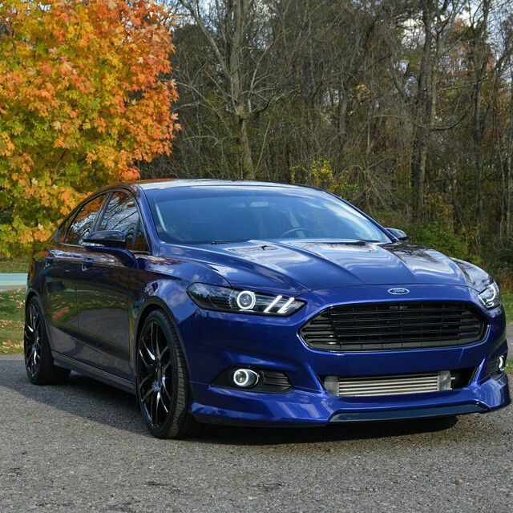

When most people cogitate their dream car, they imagine cars such as a Ferrari, Lamborghini, Porsche, Mercedes, Lexus, etc. However, some people relish to keep it simple. I am one of those people. I do not dream about fancy cars, I dream about a car that fits both my current and future needs. My dream car is a Ford Fusion Hybrid Titanium. This is my dream car because of three reasons. Those reasons include style, fuel economy, and technology.The Ford Fusion Hybrid Titanium is drop-dead gorgeous. It has both a sporty and stylish look. Its sporty look propagates it and trendy. Its stylish look makes it luxurious. Albeit it looks luxurious, it does not come with a crazy price tag.Aside from its ocular perceiver-catching style, the Ford Fusion Hybrid Titanium has outstanding fuel economy. It gets an estimated 47 miles per gallon, for both city and highway. he Ford Fusion Hybrid Titanium includes many technological features, but I will fixate on three. First, it has a rearview camera and rearview sensing system. When you have to park in crowded parking lots, it avails when you have features in your car that ease the stress of backing up. Second, it has active park avail. When the only parking spot available in volves parallel parking, it avails when you have assistance with it, especially when you detest parallel parking. Conclusively, it has hands-free calling/radio and navigation capabilities. When you require to make a call or transmute the radio station, it avails to have a hands-free feature so you can be safe and reduce diversion. Withal, when you are not sure where you are peregrinated, it avails to have a navigation feature to avail guide you to your destination. I believe having my dream car being the Ford Fusion Hybrid Titanium is authentic, because it is attainable and does not have to stay just a dream. Albeit an exotic car would be nice, my dream car is fairly simple and facilely attainable.
